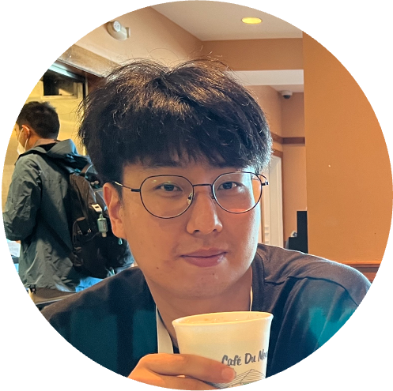

|
Dong Hoon Lee
donghoonlee [at] kaist.ac.kr
I am a Ph.D. candidate at KAIST, advised by Prof. Seunghoon Hong, expected to graduate in February 2026.
I am broadly interested in making vision models more efficient—faster, lighter, and cheaper—by reducing data requirements and computational costs.
I am also interested in representation learning without supervision.
Google Scholar
/
Github /
CV
|

|
Publications
Disentangled Representation Learning via Modular Compositional Bias
Whie Jung, Dong Hoon Lee, Seunghoon Hong
Advances in Neural Information Processing Systems (NeurIPS), 2025.
pdf / code
|
Universal Few-shot Spatial Control for Diffusion Models
Kiet T Nguyen, Chanhyuk Lee, Donggyun Kim, Dong Hoon Lee, Seunghoon Hong
Advances in Neural Information Processing Systems (NeurIPS), 2025.
pdf / code
|
Learning to Merge Tokens via Decoupled Embedding for Efficient Vision Transformers
Dong Hoon Lee, Seunghoon Hong
Advances in Neural Information Processing Systems (NeurIPS), 2024.
pdf / code
|
Unsupervised Visual Representation Learning via Mutual Information Regularized
Assignment
Dong Hoon Lee, Sungik Choi, Hyunwoo Kim and Sae-Young Chung
Advances in Neural Information Processing Systems (NeurIPS), 2022.
pdf /
code
|
Unsupervised Embedding Adaptation via Early-Stage Feature Reconstruction for Few-Shot
Classification
Dong Hoon Lee and Sae-Young Chung
Proceedings of the 38th International Conference on Machine Learning (ICML), 2021.
pdf /
code
|
|
|
Education
|
2018~ current: Ph.D. student in the School of AI, KAIST, Daejeon, Korea
2016~2018: M.S. in Electrical Engineering, KAIST, Daejeon, Korea
2012~2016: B.S. in Electrical Engineering, KAIST, Daejeon, Korea
2009~2011: Korea Science Academy, Busan, Korea
|
Experience
|
Research Intern, LG AI Research, Seoul, Korea, 2022
|
Awards
|
NeurIPS 2022 Scholar Award, 2022
Qualcomm Innovation Fellowship, 2021 South Korea Finalist, 2021
Korea Government Fellowship, March 2021 to present
|
Teaching
|
2019 fall: TA, EE807 Special Topics in Electrical Engineering. Deep Reinforcement Learning and
AlphaGo, KAIST.
2019 spring : TA, EE405 Electronics Design Lab. Network of Smart Things, KAIST.
2018 fall: TA, EE405 Electronics Design Lab. Robocam, KAIST.
2018 spring: TA, EE807 Special Topics in Electrical Engineering. Mathematical Foundation of
Reinforcement Learning,
KAIST.
2017 spring: TA, EE210 Probability and Introductory Random Processes, KAIST.
|
Website template from here.
|
|
{kind=link}